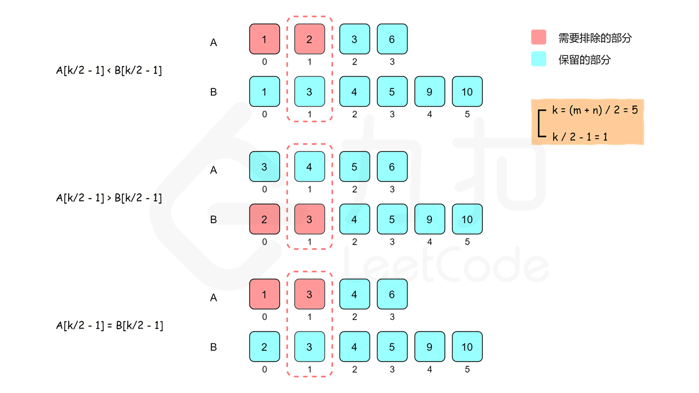

LeetCode 刷题笔记——day 3 难度：困难
给定两个大小分别为 m 和 n 的正序（从小到大）数组 nums1 和 nums2。请你找出并返回这两个正序数组的 中位数 。
算法的时间复杂度应该为 O(log (m+n)) 。
示例 1：
1 2 3 输入：nums1 = [1,3], nums2 = [2] 输出：2.00000 解释：合并数组 = [1,2,3] ，中位数 2
示例 2：
1 2 3 输入：nums1 = [1,2], nums2 = [3,4] 输出：2.50000 解释：合并数组 = [1,2,3,4] ，中位数 (2 + 3) / 2 = 2.5
示例 3：
1 2 输入：nums1 = [0,0], nums2 = [0,0] 输出：0.00000
示例 4：
1 2 输入：nums1 = [], nums2 = [1] 输出：1.00000
示例 5：
1 2 输入：nums1 = [2], nums2 = [] 输出：2.00000
提示：
nums1.length == mnums2.length == n0 <= m <= 10000 <= n <= 10001 <= m + n <= 2000-106 <= nums1[i], nums2[i] <= 106我的答案： 大致思路 就是把两个数组合并到一个新数组里，然后对这个数组进行排序，最后直接求中位数即可，粗暴。虽然通过了力扣测试，但并没有达到时间复杂度的要求。
1 2 3 4 5 6 7 8 9 10 11 12 13 14 15 16 17 18 19 20 21 22 23 24 25 26 27 28 29 30 31 32 class Solution {public : double findMedianSortedArrays (vector<int >& nums1, vector<int >& nums2) int a = nums1.size (); int b = nums2.size (); vector<int > nums (a + b) ; int i = 0 ; for (; i < a; i++) { nums[i] = nums1[i]; } for (; i < a + b; i++) { nums[i] = nums2[i - a]; } for (int i = 0 ; i < a + b; i++) { for (int j = i; j < a + b; j++) { if (nums[i] > nums[j]) { int temp = nums[i]; nums[i] = nums[j]; nums[j] = temp; } } } if ((a + b) % 2 ) { return (double )nums[(a + b) / 2 ]; } else { return double )(nums[(a + b) / 2 ] + nums[(a + b) / 2 - 1 ]) / 2.0 ; } } };
执行用时: 236 ms
内存消耗: 87.3 MB
官方答案 二分查找 在题解中，又给我们引入了新的方法：二分查找 。
根据中位数的定义，当 m+n 是奇数时，中位数是两个有序数组中的第 (m+n)/22 个元素，当 m+n 是偶数时，中位数是两个有序数组中的第 (m+n)/2 个元素和第 (m+n)/2+1 个元素的平均值。因此，这道题可以转化成寻找两个有序数组中的第 k 小的数，其中 k 为 (m+n)/2 或 (m+n)/2+1。
假设两个有序数组分别是 A 和 B。要找到第 k 个元素，我们可以比较 A[k/2−1] 和 B[k/2−1]，其中 / 表示整数除法。由于 A[k/2−1] 和 B[k/2−1] 的前面分别有 A[0 ~ k/2−2] 和 B[0 ~ k/2−2]，即 k/2−1 个元素，对于 A[k/2−1] 和 B[k/2−1] 中的较小值，最多只会有 (k/2−1)+(k/2−1)≤k−2 个元素比它小，那么它就不能是第 k 小的数了。
因此我们可以归纳出三种情况：
如果 A[k/2−1]<B[k/2−1]，则比 A[k/2−1] 小的数最多只有 A 的前 k/2−1 个数和 B 的前 k/2−1 个数，即比 A[k/2−1] 小的数最多只有 k−2 个，因此 A[k/2−1] 不可能是第 k 个数，A[0] 到 A[k/2−1] 也都不可能是第 k 个数，可以全部排除。
如果 A[k/2−1]>B[k/2−1]，则可以排除 B[0] 到 B[k/2−1]。
如果 A[k/2−1]=B[k/2−1]，则可以归入第一种情况处理。

可以看到，比较 A[k/2−1] 和 B[k/2−1] 之后，可以排除 k/2 个不可能是第 k 小的数，查找范围缩小了一半。同时，我们将在排除后的新数组上继续进行二分查找，并且根据我们排除数的个数，减少 k 的值，这是因为我们排除的数都不大于第 k 小的数。
有以下三种情况需要特殊处理：
如果 A[k/2−1] 或者 B[k/2−1] 越界，那么我们可以选取对应数组中的最后一个元素。在这种情况下，我们必须根据排除数的个数减少 k 的值，而不能直接将 k 减去 k/2。
如果一个数组为空，说明该数组中的所有元素都被排除，我们可以直接返回另一个数组中第 k 小的元素。
如果 k=1，我们只要返回两个数组首元素的最小值即可。
用一个例子说明上述算法。假设两个有序数组如下：
1 2 A: 1 3 4 9 B: 1 2 3 4 5 6 7 8 9
两个有序数组的长度分别是 4 和 9，长度之和是 13，中位数是两个有序数组中的第 7 个元素，因此需要找到第 k=7 个元素。
比较两个有序数组中下标为 k/2−1=2 的数，即 A[2] 和 B[2]，如下面所示：
1 2 3 4 A: 1 3 4 9 ↑ B: 1 2 3 4 5 6 7 8 9 ↑
由于 A[2]>B[2]，因此排除 B[0] 到 B[2]，即数组 B 的下标偏移（offset）变为 3，同时更新 k 的值：k=k−k/2=4。
下一步寻找，比较两个有序数组中下标为 k/2−1=1 的数，即 A[1] 和 B[4]，如下面所示，其中方括号部分表示已经被排除的数。
1 2 3 4 A: 1 3 4 9 ↑ B: [1 2 3] 4 5 6 7 8 9 ↑
由于 A[1]<B[4]，因此排除 A[0] 到 A[1]，即数组 A 的下标偏移变为 2，同时更新 k 的值：k=k−k/2=2。
下一步寻找，比较两个有序数组中下标为 k/2−1=0 的数，即比较 A[2] 和 B[3]，如下面所示，其中方括号部分表示已经被排除的数。
1 2 3 4 A: [1 3] 4 9 ↑ B: [1 2 3] 4 5 6 7 8 9 ↑
由于 A[2]=B[3]，根据之前的规则，排除 A 中的元素，因此排除 A[2]，即数组 A 的下标偏移变为 3，同时更新 k 的值： k=k−k/2=1。
由于 k 的值变成 1，因此比较两个有序数组中的未排除下标范围内的第一个数，其中较小的数即为第 k 个数，由于 A[3]>B[3]，因此第 k 个数是 B[3]=4。
1 2 3 4 A: [1 3 4] 9 ↑ B: [1 2 3] 4 5 6 7 8 9 ↑
作者：LeetCode-Solution
研读了题解之后，我又重新更改了一遍代码：
1 2 3 4 5 6 7 8 9 10 11 12 13 14 15 16 17 18 19 20 21 22 23 24 25 26 27 28 29 30 31 32 33 34 35 36 37 38 39 40 class Solution {public : int getNum (vector<int >& nums1, vector<int >& nums2, int k) int a = nums1.size (); int b = nums2.size (); int index1 = 0 , index2 = 0 ; while (1 ) { if (index1 == a) { return nums2[index2 + k - 1 ]; } if (index2 == b) { return nums1[index1 + k - 1 ]; } if (k == 1 ) { return min (nums1[index1], nums2[index2]); } int newind1 = min (index1 + k / 2 - 1 , a - 1 ); int newind2 = min (index2 + k / 2 - 1 , b - 1 ); if (nums1[newind1] <= nums2[newind2]) { k -= newind1 - index1 + 1 ; index1 = newind1 + 1 ; } else { k -= newind2 - index2 + 1 ; index2 = newind2 + 1 ; } } } double findMedianSortedArrays (vector<int >& nums1, vector<int >& nums2) int len = nums1.size () + nums2.size (); if (len % 2 ) { return getNum (nums1, nums2, len / 2 + 1 ); } else { return getNum (nums1, nums2, len / 2 ) + getNum (nums1, nums2, len / 2 + 1 )) / 2.0 ; } } };
虽然代码理论复杂了不少，但不可否认的是，运行快了很多。
用 Java 再次练习了一遍：
1 2 3 4 5 6 7 8 9 10 11 12 13 14 15 16 17 18 19 20 21 22 23 24 25 26 27 28 29 30 31 32 33 34 35 36 37 38 39 class Solution public double findMedianSortedArrays (int [] nums1, int [] nums2) int len = nums1.length + nums2.length; if (len % 2 == 1 ) { return getNum(nums1, nums2, len / 2 + 1 ); } else { return (getNum(nums1, nums2, len / 2 ) + getNum(nums1, nums2, len / 2 + 1 )) / 2.0 ; } } public int getNum (int [] nums1, int [] nums2, int k) int a = nums1.length; int b = nums2.length; int index1 = 0 , index2 = 0 ; while (true ) { if (index1 == a) { return nums2[index2 - 1 + k]; } if (index2 == b) { return nums1[index1 - 1 + k]; } if (k == 1 ) { return Math.min(nums1[index1], nums2[index2]); } int newind1 = Math.min(index1 + k / 2 - 1 , a - 1 ); int newind2 = Math.min(index2 + k / 2 - 1 , b - 1 ); if (nums1[newind1] <= nums2[newind2]) { k -= newind1 - index1 + 1 ; index1 = newind1 + 1 ; } else { k -= newind2 - index2 + 1 ; index2 = newind2 + 1 ; } } } }
这里挖个坑， 为什么相同代码 Java 的内存消耗和执行用时都比 C++ 要小好多？
划分数组 在这道题的官方题解中，还提到了第二种方法： 划分数组 。
说明
方法一的时间复杂度已经很优秀了，但本题存在时间复杂度更低的一种方法。这里给出推导过程，勇于挑战自己的读者可以进行尝试。
思路与算法
为了使用划分的方法解决这个问题，需要理解「中位数的作用是什么」。在统计中，中位数被用来：
将一个集合划分为两个长度相等的子集，其中一个子集中的元素总是大于另一个子集中的元素。
如果理解了中位数的划分作用，就很接近答案了。
首先，在任意位置i i i A A A
left_A | right_A
A[0], A[1], ..., A[i-1] | A[i], A[i+1], ..., A[m-1]
由于A A A m m m m + 1 m+1 m + 1 i ∈ [ 0 , m ] i∈[0,m] i ∈ [ 0 , m ]
len ( left_A ) \text{len}(\text{left\_A}) len ( left_A ) i i i len ( right_A ) \text{len}(\text{right\_A}) len ( right_A ) m − i m - i m − i l e n ( r i g h t A ) = m − i len(right_A)=m−i l e n ( r i g h t A ) = m − i
注意：当i = 0 i=0 i = 0 left_A \text{left\_A} left_A i = m i=m i = m right_A \text{right\_A} right_A
采用同样的方式，在任意位置j j j B \text{B} B
left_B | right_B
B[0], B[1], ..., B[j-1] | B[j], B[j+1], ..., B[n-1]
将left_A \text{left\_A} left_A left_B \text{left\_B} left_B right_A \text{right\_A} right_A right_B \text{right\_B} right_B left_part \text{left\_part} left_part right_part \text{right\_part} right_part
left_part | right_part
A[0], A[1], ..., A[i-1] | A[i], A[i+1], ..., A[m-1]
B[0], B[1], ..., B[j-1] | B[j], B[j+1], ..., B[n-1]
当A \text{A} A B \text{B} B
len ( left_part ) = len \text{len}(\text{left\_part}) = \text{len} len ( left_part ) = len right_part ) \text{right\_part}) right_part ) max ( left_part ) ≤ min ( right_part ) \max(\text{left\_part}) \leq \min(\text{right\_part}) max ( left_part ) ≤ min ( right_part ) { A , B } \{\text{A}, \text{B}\} { A , B }
median \text{median} median max ( left _ part ) + min ( right _ part ) 2 \frac{\text{max}(\text{left}\_\text{part}) + \text{min}(\text{right}\_\text{part})}{2} 2 max ( left _ part ) + min ( right _ part )
当A \text{A} A B \text{B} B
len ( left_part ) = len \text{len}(\text{left\_part}) = \text{len} len ( left_part ) = len right_part ) + 1 \text{right\_part})+1 right_part ) + 1 max ( left_part ) ≤ min ( right_part ) \max(\text{left\_part}) \leq \min(\text{right\_part}) max ( left_part ) ≤ min ( right_part ) { A , B } \{\text{A}, \text{B}\} { A , B }
median = max ( left _ part ) \text{median} = \text{max}(\text{left}\_\text{part}) median = max ( left _ part )
第一个条件对于总长度是偶数和奇数的情况有所不同，但是可以将两种情况合并。第二个条件对于总长度是偶数和奇数的情况是一样的。
要确保这两个条件，只需要保证：
i + j = m − i + n − j i + j = m - i + n - j i + j = m − i + n − j m + n m+n m + n i + j = m − i + n − j + 1 i + j = m - i + n - j + 1 i + j = m − i + n − j + 1 m + n m+n m + n i i i j j j i + j = m + n + 1 2 i+j = \frac{m + n + 1}{2} i + j = 2 m + n + 1
0 ≤ i ≤ m 0 \leq i \leq m 0 ≤ i ≤ m 0 ≤ j ≤ n 0 \leq j \leq n 0 ≤ j ≤ n A \text{A} A B \text{B} B m ≤ n m \leq n m ≤ n i ∈ [ 0 , m ] i \in [0, m] i ∈ [ 0 , m ] j = m + n + 1 2 − i ∈ [ 0 , n ] j = \frac{m + n + 1}{2} - i \in [0, n] j = 2 m + n + 1 − i ∈ [ 0 , n ] [ 0 , m ] [0, m] [ 0 , m ] i i i j j j
B [ j − 1 ] ≤ A [ i ] \text{B}[j-1] \leq \text{A}[i] B [ j − 1 ] ≤ A [ i ] A [ i − 1 ] ≤ B [ j ] \text{A}[i-1] \leq \text{B}[j] A [ i − 1 ] ≤ B [ j ]
为了简化分析，假设A [ i − 1 ] \text{A}[i-1] A [ i − 1 ] B [ j − 1 ] \text{B}[j-1] B [ j − 1 ] A [ i ] \text{A}[i] A [ i ] B [ j ] \text{B}[j] B [ j ] i = 0 i=0 i = 0 i = m i=m i = m j = 0 j=0 j = 0 j = n j=n j = n A [ − 1 ] = B [ − 1 ] = − ∞ \text{A}[-1]=\text{B}[-1]=-\infty A [ − 1 ] = B [ − 1 ] = − ∞ A [ m ] = B [ n ] = ∞ A[m]=\text{B}[n]=\infty A [ m ] = B [ n ] = ∞ 最大值 产生影响；当一个数组不出现在后一部分时，对应的值为正无穷，就不会对后一部分的最小值 产生影响。
所以我们需要做的是：
在[ 0 , m ] [0, m] [ 0 , m ] i i i
B [ j − 1 ] ≤ A [ i ] \qquad \text{B}[j-1] \leq \text{A}[i] B [ j − 1 ] ≤ A [ i ] A [ i − 1 ] ≤ B [ j ] \text{A}[i-1] \leq \text{B}[j] A [ i − 1 ] ≤ B [ j ] j = m + n + 1 2 − i j = \frac{m + n + 1}{2} - i j = 2 m + n + 1 − i
我们证明它等价于：
在[ 0 , m ] [0, m] [ 0 , m ] i i i
A [ i − 1 ] ≤ B [ j ] \qquad \text{A}[i-1] \leq \text{B}[j] A [ i − 1 ] ≤ B [ j ] j = m + n + 1 2 − i j = \frac{m + n + 1}{2} - i j = 2 m + n + 1 − i
这是因为：
当i i i 0 ∼ m 0 \sim m 0 ∼ m A [ i − 1 ] \text{A}[i-1] A [ i − 1 ] B [ j ] \text{B}[j] B [ j ] i i i A [ i − 1 ] ≤ B [ j ] \text{A}[i-1] \leq \text{B}[j] A [ i − 1 ] ≤ B [ j ]
如果i i i i + 1 i+1 i + 1 i + 1 i+1 i + 1 A [ i ] > B [ j − 1 ] \text{A}[i] > \text{B}[j-1] A [ i ] > B [ j − 1 ] B [ j − 1 ] < A [ i ] \text{B}[j - 1] < \text{A}[i] B [ j − 1 ] < A [ i ] i i i
因此我们可以对i i i [ 0 , m ] [0, m] [ 0 , m ] A [ i − 1 ] ≤ B [ j ] \text{A}[i-1] \leq \text{B}[j] A [ i − 1 ] ≤ B [ j ] i i i
作者：LeetCode-Solution
再次用 C++ 练习了一下这个方法：
1 2 3 4 5 6 7 8 9 10 11 12 13 14 15 16 17 18 19 20 21 22 23 24 25 26 27 28 29 30 31 32 33 class Solution {public : double findMedianSortedArrays (vector<int >& nums1, vector<int >& nums2) if (nums1.size () > nums2.size ()) { return findMedianSortedArrays (nums2, nums1); } int a = nums1.size (); int b = nums2.size (); int left = 0 , right = a; int medmax = 0 , medmin = 0 ; while (left <= right) { int i = (left + right) / 2 ; int j = (a + b + 1 ) / 2 - i; int med_in1 = i == 0 ? INT_MIN : nums1[i-1 ]; int med_in2 = j == 0 ? INT_MIN : nums2[j-1 ]; int med_ax1 = i == a ? INT_MAX : nums1[i]; int med_ax2 = j == b ? INT_MAX : nums2[j]; if (med_in1 <= med_ax2) { medmax = max (med_in1, med_in2); medmin = min (med_ax1, med_ax2); left = i + 1 ; } else { right = i - 1 ; } } return (a + b) % 2 == 0 ? (medmax + medmin) / 2.0 : medmax; } };
代码不算很复杂，但推理的过程确实非常巧妙。
今天还是只搞这一道题，一直对时间/空间复杂度的概念不是很清楚，这里记录一下来自维基百科的解释：
算法效率 在计算机科学中，算法的时间复杂度 （Time complexity）是一个函数，它定性描述该算法的运行时间。这是一个代表算法输入值的字符串的长度的函数。时间复杂度常用大O符号表述，不包括这个函数的低阶项和首项系数。使用这种方式时，时间复杂度可被称为是渐近的，亦即考察输入值大小趋近无穷时的情况。例如，如果一个算法对于任何大小为 n （必须比 n0 大）的输入，它至多需要5 n 3 + 3 n 5n^3 + 3n 5 n 3 + 3 n n 3 n^3 n 3
为了计算时间复杂度，我们通常会估计算法的操作单元数量，每个单元执行的时间都是相同的。因此，总运行时间和算法的操作单元数量最多相差一个常量系数。
相同大小的不同输入值仍可能造成算法的执行时间不同，因此我们通常使用算法的最坏情况复杂度，记为T ( n ) T(n) T ( n ) T (n ) 的自然特性加以分类，举例来说，有着 T(n) = O(n) 的算法被称作“线性时间算法”；而 T(n) = O (M n M^n M n M n M^n M n
以下表格统整了一些常用的时间复杂度类。表中，poly(x) =x O ( 1 ) x^{O(1)} x O ( 1 )
名称 复杂度类 运行时间（T ( N ) T(N) T ( N ) 运行时间举例 算法举例 常数时间 O ( 1 ) O(1) O ( 1 ) 10 判断一个二进制数的奇偶 反阿克曼时间 O ( α ( n ) O(\alpha(n) O ( α ( n ) 并查集的单个操作的平摊时间 迭代对数时间 O ( l o g ∗ n ) O(log^* n) O ( l o g ∗ n ) 分布式圆环着色问题 对数对数时间 O ( l o g l o g n ) O(log log n) O ( l o g l o g n ) 有界优先队列的单个操作 对数时间 DLOGTIME O ( l o g n ) O(log n) O ( l o g n ) l o g n log n l o g n l o g n 2 log n^2 l o g n 2 二分搜索 幂对数时间 ( l o g n ) O ( 1 ) (log n)^{O(1)} ( l o g n ) O ( 1 ) ( l o g n ) 2 (log n)^2 ( l o g n ) 2 （小于1次）幂时间 O ( n c ) O(n^c) O ( n c ) 0 < c < 1 0 < c < 1 0 < c < 1 n 1 2 n^\frac {1}{2} n 2 1 n 2 3 n^ \frac{2}{3} n 3 2 K-d树的搜索操作 线性时间 O ( n ) O(n) O ( n ) n n n 无序数组的搜索 线性迭代对数时间 O ( n l o g ∗ n ) O(n log^* n) O ( n l o g ∗ n ) 莱姆德·赛德尔的三角分割多边形算法 线性对数时间 O ( n l o g n ) O(n log n) O ( n l o g n ) n l o g n nlog n n l o g n l o g n ! log n! l o g n ! 最快的比较排序 二次时间 O ( n 2 ) O(n^2) O ( n 2 ) n 2 n^2 n 2 冒泡排序、插入排序 三次时间 O ( n 3 ) O(n^3) O ( n 3 ) n 3 n^3 n 3 矩阵乘法的基本实现，计算部分相关性 多项式时间 P 2 O ( l o g n ) = n O ( 1 ) 2^{O(log n)} = n^{O(1)} 2 O ( l o g n ) = n O ( 1 ) n n n n l o g n n log n n l o g n n 10 n^{10} n 10 线性规划中的卡马卡算法，AKS质数测试 准多项式时间 QP 2 ( l o g n ) O ( 1 ) 2^{(logn)^{O(1)}} 2 ( l o g n ) O ( 1 ) 关于有向斯坦纳树问题最著名的O ( l o g 2 n ) O(log^2n) O ( l o g 2 n ) 次指数时间（第一定义） SUBEXP O ( 2 n ϵ ) O(2^{n^\epsilon}) O ( 2 n ϵ ) O ( 2 ( l o g n ) l o g l o g n ) O(2^{(logn)^{loglogn}}) O ( 2 ( l o g n ) l o g l o g n ) 假设复杂性理论推测，BPP包含在 SUBEXP 中。 次指数时间（第二定义） 2 o ( n ) 2^{o(n)} 2 o ( n ) 2 n 1 3 2^{n^{\frac {1}{3}}} 2 n 3 1 用于整数分解与图形同构问题的著名算法 指数时间 E 2 O ( n ) 2^{O(n)} 2 O ( n ) 1. 1 n , 1 0 n 1.1^n, 10^n 1. 1 n , 1 0 n 使用动态规划解决旅行推销员问题 阶乘时间 O ( n ! ) O(n!) O ( n !) n ! n! n ! 通过暴力搜索解决旅行推销员问题 指数时间 EXPTIME 2 p o l y ( n ) 2^{poly(n)} 2 p o l y ( n ) 2 n , 2 n 2 2^n, 2^{n^2} 2 n , 2 n 2 双重指数时间 2-EXPTIME 2 2 p o l y ( n ) 2^{2^{poly(n)}} 2 2 p o l y ( n ) 2 2 n 2^{2^n} 2 2 n 在预膨胀算术中决定一个给定描述的真实性
在计算机科学中，一个算法或程序的空间复杂度 定性地描述该算法或程序运行所需要的存储空间大小。空间复杂度是相应计算问题的输入值的长度的函数，它表示一个算法完全执行所需要的存储空间大小。
和时间复杂度类似，空间复杂度通常也使用大O记号来渐进地表示，例如O ( n ) O(n) O ( n ) O ( n l o g n ) O(nlogn) O ( n l o g n ) O ( 2 n ) O(2^n) O ( 2 n ) n n n
就像时间复杂度的计算不考虑算法所使用的空间大小一样，空间复杂度也不考虑算法运行需要的时间长短。